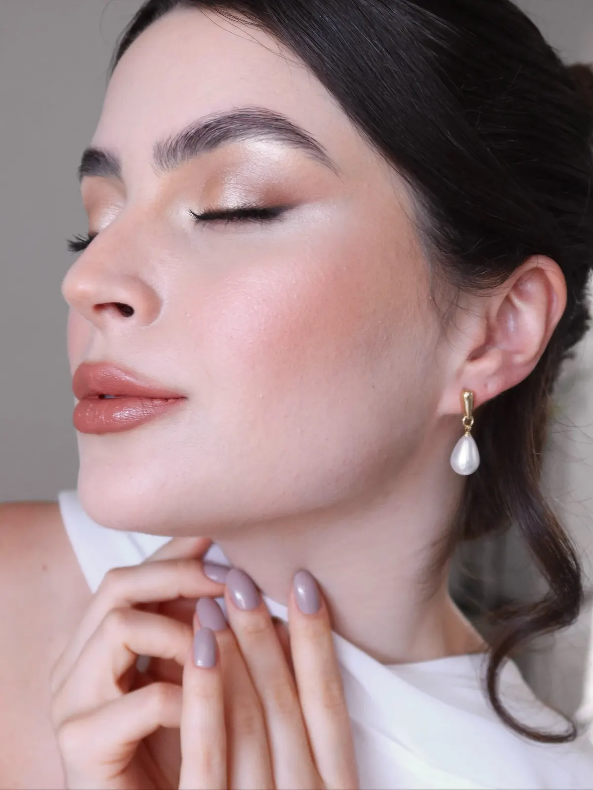
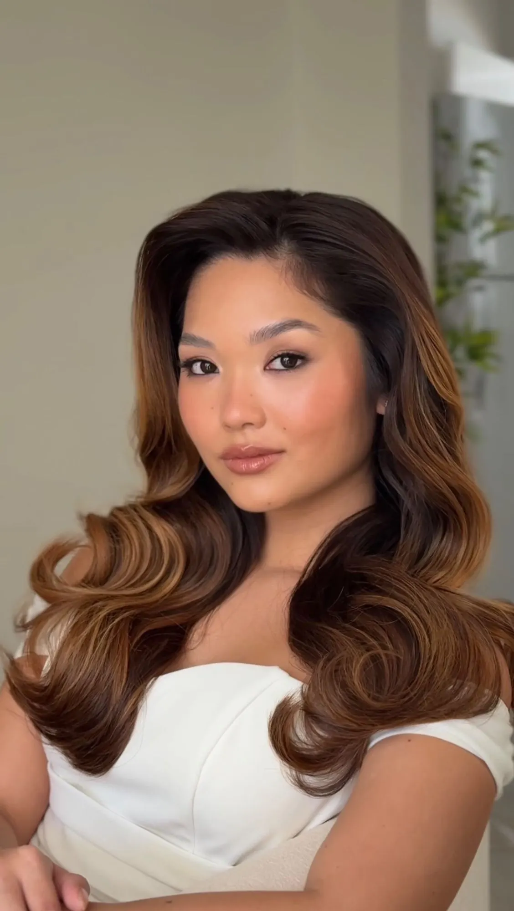
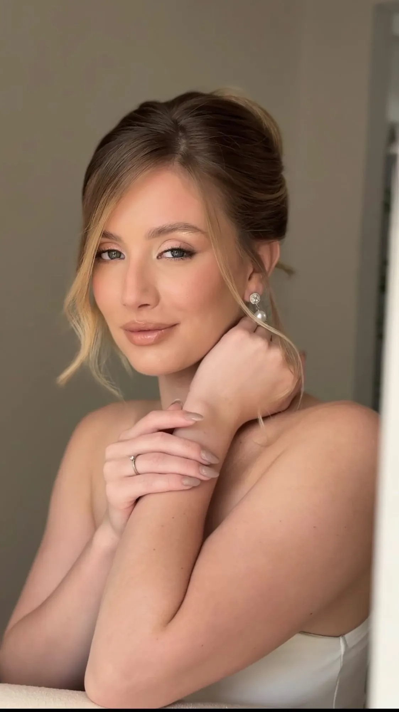
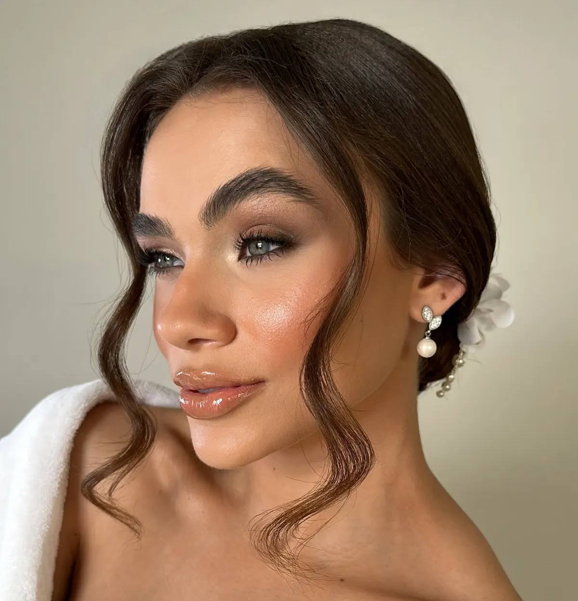

Teste prévio
Testamos a maquiagem e o penteado antes do casamento.
Noivas
A elegância de uma beleza que não esconde a noiva
Consultar agendaYara Estrela

manifesto-01.webp — retrato 3:4: noiva de perfil ou três-quartos
manifesto-02.webp — retrato 4:5: noiva de cabelo em ondas, maquiagem visível
manifesto-03.webp — retrato 4:5: cabeça e ombros, maquiagem visívelÉ o que as noivas me dizem antes de tudo. Por isso eu não sigo tendência: faço a maquiagem e o penteado de cada uma pensando em quem ela é.
A foto do casamento vai ser vista por muitos anos, então escolho tudo com calma. A maquiagem pode ser leve ou mais marcante, do jeito que você preferir.
Atendo em casa ou no hotel. Sua mãe, suas madrinhas e outras convidadas também podem ser atendidas pela minha equipe.
[CONFIRMAR com a Yara se há equipe com ela. Fonte da informação: perfil dela no casamentos.com.br, que diz "No dia do evento atende a noiva e somente mais duas ou três pessoas, a equipe atenderá as demais". A parte "mãe e madrinhas" veio do modelo de dúvidas da brief, não dessa página.]
Testamos a maquiagem e o penteado antes do casamento.
Te ajudo a combinar tudo com o vestido, o horário e o estilo da festa.
No dia, eu faço os dois, um combinando com o outro.

servico-cilios.webp — Noiva de perfil, com cílios e pele iluminadaCílios e um spa de olhos e lábios antes da cerimônia.
Aplico blindagem para a maquiagem durar a festa toda.
Fico com você para retocar, trocar o penteado e tirar o véu.
Você me conta sobre o casamento pelo WhatsApp.
A data fica reservada com o contrato.
Escolhemos juntas a maquiagem e o penteado, combinando com o vestido.
Te arrumo com calma, sem correria.
Fico com você até a festa começar.
“Obrigada, Ya! Por cuidar tão bem de tudo (absolutamente todos os detalhes) - desde os acessórios, penteado e a make impecável [...] amei todo o cuidado que recebi, obrigada por fazer parte disso e me deixar em minha melhor versão para meu grande dia.”
Jussara · noiva
Faço maquiagem e penteado de noivas há sete anos. Sou Embaixadora e Visagista Master pelo método C. Juillard (Visagismo Total Look®), com certificação concedida em Lisboa, em 2025.
Gosto de uma beleza equilibrada, que combine com a sua personalidade e com o seu gosto. No dia do casamento eu cuido da maquiagem e do cabelo e fico com você até a festa.
Antes de começar, olho o seu rosto de frente, de perfil e a parte de trás da cabeça, junto com o penteado. Assim decido a textura, a intensidade e a luz da maquiagem, valorizo o que você mais gosta em você e suavizo o que prefere não destacar.
Eu desisti da Odontologia para fazer o que me deixa feliz: realçar a beleza das mulheres no dia mais especial da vida delas. Estudo e treino sempre, porque quero atender cada noiva com técnica e com cuidado. Quando uma noiva realiza o sonho dela, eu realizo o meu.
com carinho, Yá
Falar com a YaraO ideal é reservar até um ano antes, principalmente para as datas de mais procura. Atendo uma noiva por data. [CONFIRMAR "uma noiva por data" com a Yara]
Faço os dois. Como o penteado muda o jeito de ver o rosto, eu penso nos dois juntos.
Está. É no teste que escolhemos juntas a maquiagem e o penteado, combinando com o vestido e o horário da cerimônia.
Vai. Aplico uma blindagem e fico com você depois da cerimônia para retocar.
Não precisa. Você escolhe a intensidade, do bem leve ao mais marcante. A ideia é sempre realçar você, sem esconder quem você é.
Sim, a minha equipe atende. Quando entrar em contato, me diga quantas pessoas serão. [CONFIRMAR com a Yara se há equipe com ela. Fonte: casamentos.com.br ("a equipe atenderá as demais"); "mãe e madrinhas" veio da brief.]
Sim, em todo o Brasil. Minha base é em São Paulo; se o casamento for em outra cidade ou for destination wedding, combinamos a agenda e o deslocamento de acordo com o local.
Depende da data, do local e de quantas pessoas vou atender. Me chame no WhatsApp que eu envio a proposta.
As datas fecham com bastante antecedência. Me conte sobre o seu casamento que eu respondo pessoalmente.
com carinho, Yá
Consultar minha data no WhatsApp